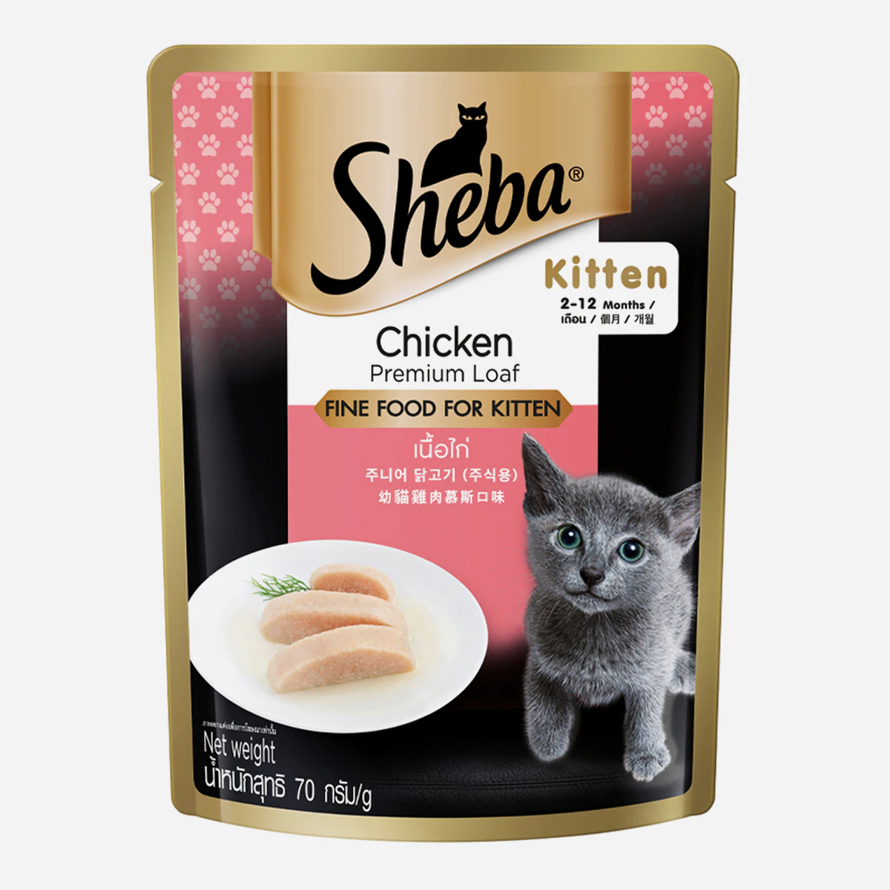

Kitten Adoption Information
Food
Natural food
If your Kitten is more than 2 months old, it is time to start chewable food. A a kitten until 16 weeks (4 Months) must be fed 4 times a day and then lowered down to three meals. Cats are strict carnivores in their natural habitats, meaning that they eat raw meat. It doesn’t need any other food. In the wild, they catch and eat small animals like lizards, squirrels, birds, rats etc. We try to mimic this by giving them chicken or other small animal meat available. Fish can also be given although it doesn’t have all the nutrients required.
Their natural diet when eating raw meat is high in protein, moderate in fat and also includes a small number of carbohydrates. Thus, cats are adapted to eat raw meat, organs and even bones from animals they catch. When a cat catches a bird or small rodent, they pretty much eat the whole thing! Their digestive tract is short and acidic, meaning that raw meat can be digested in around 12 hours, not giving bacteria enough time to grow. Thus, preventing food poisoning. Their natural food consists of 79-84% muscle meat , 6% raw edible bone, 5% liver, 5% other secreting organs, and 0-5% animal based fiber.
Chicken or Fish
The chicken we buy from poultry farms and the fish from the markets might contain steroids, antibiotics, formalin etc which might harm the kitten if consumed as such. Also they may contain parasites and bacteria. It is advisable to steam the chicken and fish for a few minutes, so the chemicals would disintegrate. Tiny kittens can’t consume bones. Until they are 8 months old, do not give them bones. Give meat, skin etc. Vets typically recommend that you feed your cat 2% to 4% of their total body weight per day.
Commercial Food
You can also buy commercially available cat food which dry kibbles. Wet food is also available but it is expensive to give daily. If you are feeding it commercially available food, please ensure that the cat is drinking ample water. Please do not switch between brands especially when the kittens are growing they may cause major diarrhoea and damage to the intestine. Follow the same pattern till they are at least 6-7 months old. Excessive feeding can cause bad tummy too or a gas. Make sure the kitten eat on time don’t leave food around the house. Free feeding is a bad habit and should not be enforced.


Bowls
Water should be kept in a separate bowl away from where you feed the cat. Both feeding and water bowls should be shallow enough for the cats to use easily.

If your kitten is up to 2 months old, the food is separate. Check it out in this page.
Chocolate or Alcoholic Beverage
Do not feed chocolate or Alcoholic beverages to cats or Dogs. It is toxic and can lead to permanent damage to the internal organs or death of the animal.

iT’S OKAY TO LOOK NOT TO EAT
Litter box
What is a litter box?
Litter box is the toilet for a cat inside the house. Cats pee or poop in sand and use their paws in a backward sweeping motion to cover their feces. To stimulate this instinctive desire, a litter box's bottom is typically filled with 8 cm of cat litter. Litter box filler(Litter) is a loose, granular material that absorbs moisture and odors such as ammonia from the cat urine.
What Litter Box to Buy?
You can buy commercially available litter box or just buy a plastic box from the nearby store. Ensure that your cat can jump in and out of it easily. It should be wide so that the cat will fit into it even when they grow up. This 10L Plastic box from Nakoda Plastics is really good, I have been using it for 9 Years. The lid needs to be removed.

Where to place the Litter Box?
Keep the litter box in an open area easily accessible for the cat. Do not hide it or cover it. One corner of the room in which the cat stays usually is a good place.
What about the Litter?
There are various types of litter available in the market. From clumping litter to wooden pellets, there is a large variety. Clumping litter may not disintegrate and the waste disposal might be an issue. It causes environmental pollution. You can even use saw dust or fine sand.
How to clean the Litter?
Buy a scooper like this

If you have more than one kitten make sure to clean the litter box at least twice a day: clean litter will make them to come back to litter box and do their job otherwise they might start peeing or pooping outside the box. If you find them peeing or pooping outside the box, immediately clean the area and mop the area with vinegar or any smell diluter.
If you notice frequent urinating and also urinating outside the box then your cat has a health condition. See your vet.
How many Litter boxes are required?
The number is n+1, n being the number of cats you have. If you have 2 cats then keep 3 litter boxes. Ensure that the litter box is filled till 1/2 the size of the box.
Using Human Toilets
If your cat goes to your toilet and you don’t mind, then let it use. But do not force them or try to teach them use the toilets. There are many products available to teach this to cats but from our experience it will only confuse the cats and starts serious behavior issues.
Vaccination
Two Vaccines - Annually
Tricat(Multicomponent Vaccine-MCV) is the vaccine that is given when the kitten is 8-10 weeks. It is to protect the cat from 3 deadly viruses that are very common. After 3 weeks(21days) MCV Booster along with anti rabies vaccine is given. Again after 21 Days an anti rabies booster is given. So by 5 months all vaccinations are completed. Both Anti rabies and MCV vaccines need to be repeated annually once.
| Age | 8 -10 Weeks | After 21 Days | After 21 Days |
|---|---|---|---|
| Vaccine | MCV First Dose | MCV Booster, Anti rabies First Dose | Anti Rabies Booster |
Where to Vaccinate?
Antirabies vaccine is available for free in the government veterinary hospital. Tricat vaccine needs to be bought from a medical shop(usually available in a medical shop near the veterinary hospital) for approximately Rs 500, the doctors at the government hospital will inject both the vaccines and give a booklet as proof of vaccination. Alternately you can get it done in a private veterinary hospital. Usually they charge Rs 1000-1500.
Catifying the House
Cat proofing
Cat Proofing your windows or balcony is easy to do. Don't put your cat's life at risk by not taking the time to do this. So many cats & kittens fall from windows. We really don't want to risk adopting cat's out to people who aren't willing to do this. Below find all the details you need to cat proof your windows, you don't need to drill into any walls, so don't worry about whether you need permission from your landlord. This is simple and effective. If you think that your cat is safe (even from a first floor flat), you are unfortunately mistaken. Cats are more likely to do themselves more damage from falling from a lower height. However this doesn't apply to kittens, as they will probably not survive the fall. Zip ties or use a stapler gun.
Your windows can be easily covered using Flexi-glass. An inexpensive effective and aesthetically pleasing way of cat proofing your windows.
.jpeg)
.jpeg)

Space they can claim and perch. Map out a space that will get your cat up off the floor, and create a continuous path that takes them all the way around the room without ever touching the floor (the cat superhighway). Now they have space they can claim as their own. Get creative. You can use cat shelves, your own furniture, odds-and-ends you might find in your garage (a nice trunk, wine crate, etc.). When they have spaces to leave their scent, this reinforces the feeling of “this space is mine,” which fosters a feeling of confidence, security, and comfort.

Areas to climb and jump. Outdoor cats love to race-up trees so if you don’t want them climbing on your furniture, you have to give them other places to do so. There are a variety of great cat trees and lounges to choose from. You can also create your own. Try natural objects — a nice arrangement of large branches, scrap wood, or wood planks from a hardware store. Besides cat shelves, try an antique or natural wood ladder, an assortment of decorative stools, or other visually pleasing objects that are different heights.


.jpeg)

Toxic plants and flowers
There are certain plants and flowers that are toxic to cats. You can find the list in this link:
https://m.petmd.com/cat/emergency/poisoning-toxicity/e_ct_poisonous_plants
Sterilization
Sterilize the cat at 5-6 months. Take an appointment at the veterinary clinic. The government veterinary clinics usually charges Rs 250 for the surgery. Besides you will need to buy the supplies from a medical shop near by. Take an appointment beforehand. For the males, you can easily get an appointment but the female appointments can take for ever. Any nearby private clinic does the job with 24 hrs notice. The charge for male sterilization starts at Rs 1800 and can go up to Rs 3000. Female sterilization would be slightly more expensive. In Ernakulam, Cochin Pet hospital, Panampilly Nagar, felican hospital Thripunithura are good hospitals.
Male: It only takes 20-30 minutes for the male to be neutered.
Female: The female spaying takes more time. Specify to the vet that you don't need the uterus removed, just the ovaries. Post surgical care should be given. Do not let the cat out until the stitches are removed.
Behaviour & Grooming
Teeth and play biting
Do not OFFER YOUR Fingers or hands or hair to play with. When you think your kitten is approaching to play with your leg offer a soft toy so that they can do to the play biting with it: it might look cute when they come to your leg or hand but once they are grown they get a habit to play with your hand and it can get rough.

Bath
Do not give bath to the cats unless the doctor prescribes a flea bath or medicated bath. If you find that the cat is excessively dirty, especially with tar or oil then try to remove it with a damp cloth. Bath should only be a last resort. Dry them off with a hair dryer on low heat setting immediately after.
Holding the Kitten or Cat
Give support on their bottoms or back while holding them in your hands

Kitten is held by giving support on to its bottom

A way of holding adult cats by giving support to their backs
.jpeg)
Another way of holding adult cats by giving support to their backs
Rubbing


Fleas and Ticks
Fleas and Ticks carry bacteria that causes very serious diseases like hemobartonellosis, which is very common among Indian stray cats. If you find any flea or tick on your cat, attend to it immediately. For Kittens, ectoparasitic baths might be advised by doctors. For adult cats Fipronil Spray or Spot on might be given. Use it only on the advice of a Veterinarian.

Toys
Use string toys or balls to occupy the kitten. Make sure the cat is tired. Do not disturb a sleeping cat. Scratch posts are readily available in the market or you can make one using coir rope. Just tie coir rope tightly to the end of a table. Cats love cardboard boxes to play with, sit on and scratch on.
.jpeg)
Cat Carrier
It’s important for your kittens to have a separate carrier for each one of them. In this way they have enough space in each box while they are carrier to the vet or traveling purpose

.jpeg)
Taking to the Vet
Cats are scared of unknown places and people. So every visit to the vet is scary for them. They may try to jump out of a normal box. So always take the cat to the vet in a cat crate. When you open the box at the vet, the cat may try to escape through the open doors or windows. Ensure that the doors and windows of the room are closed. Do not open the cat crate outside. For extra protection, it is better to put a cat body leash on it.
Collar
It is better not to let the cat outside, but if you plan to allow supervised visits then put an easily detachable collar on its neck. The collar needs to be easily visible. A small locket with your phone number would be great.

Cleaning the room
Do not use harsh chemicals to clean the room. Products like Lizol causes allergy and hairfall for cats. Either use 100% organic cleaners or kennel cleaners specifically made for cats and dogs. Cleaners like Jibss is good to destroy harmful viruses.